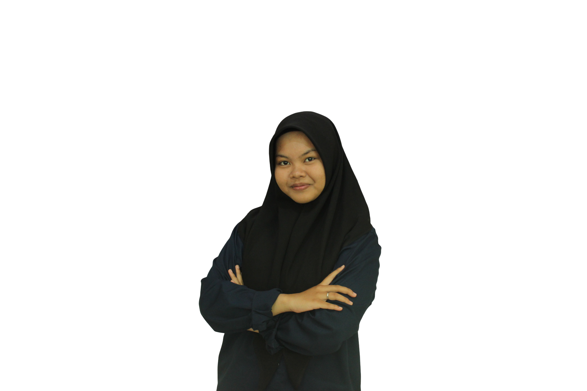
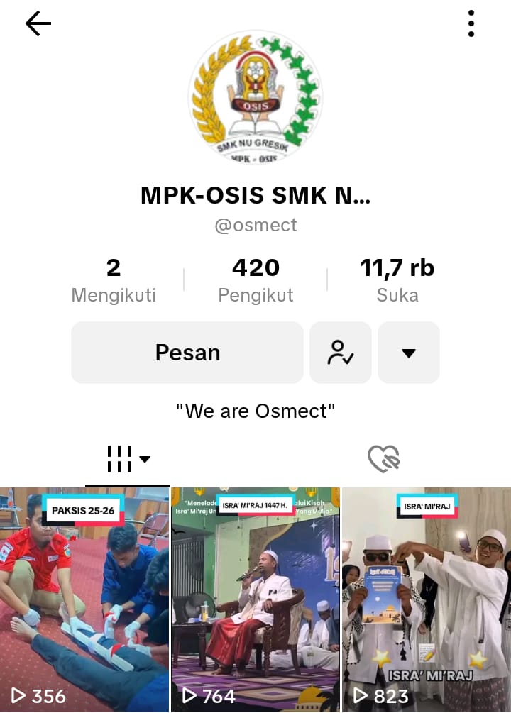
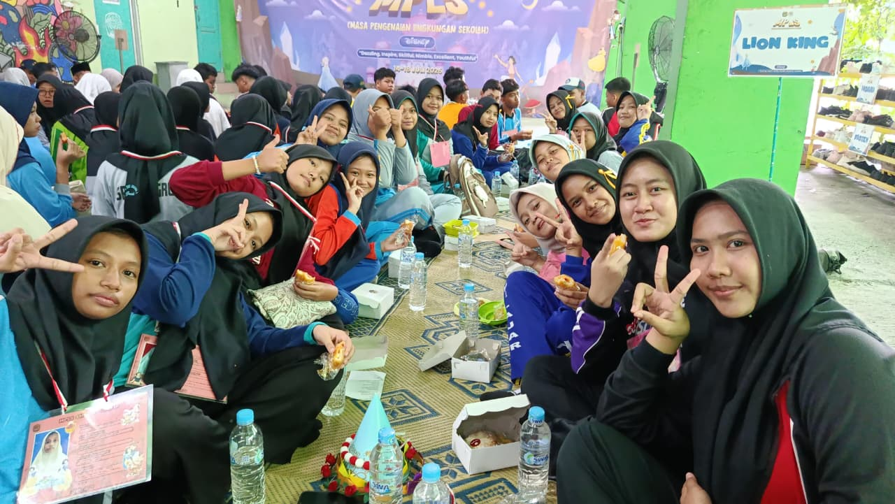

Badan Pengurus Harian (BPH) merupakan pengurus inti yang bertanggung jawab penuh atas segala kegiatan keorganisasian, mengawasi dan melakukan koordinasi dengan setiap Sekbid (Seksi Bidang) untuk menjalankan Program Kerja. BPH terdiri atas Ketua, Wakil Ketua, Sekretaris 1, Sekretaris 2, Bendahara 1 & Bendahara 2.
- Membuat visi misi OSIS untuk satu tahun kepengurusan.
- Memimpin OSIS dengan baik dan bijaksana.
- Bertanggung jawab kepada pembina OSIS dan pimpinan sekolah.
- Mengkoordinasi setiap rapat yang diselenggarakan OSIS.
- Mengkoordinasi setiap pengurus dan anggota OSIS.
- Menyusun program kerja OSIS dan melaksanakannya sebaik mungkin selama satu tahun ke depan.
- Melakukan evaluasi setiap kegiatan OSIS.
- Menjalin komunikasi dengan baik terhadap sesama anggota.
- Menetapkan setiap keputusan berdasarkan rapat yang diadakan secara musyawarah dan mufakat.
- Mengkoordinasi setiap usulan pengurus dan anggota OSIS dalam setiap rapat.
• Membantu ketua osis dalam mengerjakan tugas-tugasnya
• Menggantikan Ketua Osis saat ada kendala dalam mengemban tugas
- Mendampingi ketua dalam memimpin setiap rapat.
- Menyiarkan, mendistribusikan dan menyimpan surat serta arsip yang berhubungan dengan pelaksanaan kegiatan.
- Menyiapkan laporan, surat, hasil rapat dan evaluasi kegiatan.
- Bertanggung jawab atas tertib administrasi organisasi.
- Bertindak sebagai notulis dalam rapat.
- Bertanggung jawab dan mengetahui segala pemasukan pengeluaran uang/biaya yang diperlukan.
- Membuat tanda bukti kuitansi setiap pemasukan pengeluaran uang untuk laporan pertanggung jawaban.
- Bertanggung jawab atas inventaris dan perbendaharaan.
- Menyampaikan laporan keuangan secara berkala.

Media kreatif merupakan salah satu Program Kerja Osmect untuk memperkenalkan MPK-OSIS SMK NU Gresik yang kepanitiannya terdiri dari Badan Pengurus Harian (BPH), Majelis Permusyawaratan Kelas (MPK), dan beberapa anggota Seksi Bidang lain. Fungsi dan tujuannya yaitu untuk membuat konten edukasi dan hiburan serta mempromosikan Program Kerja MPK-OSIS SMK NU GRESIK kepada dunia luar, khususnya sosial media.

MPLS merupakan kegiatan yang dilaksanakan untuk peserta didik baru. Pada dasarnya, kegiatan MPLS merupakan program kerja dari sekbid BK (Berorganisasi Kepemimpinan) namun terdapat sebuah perubahan pada tahun 2026, kegiatan MPLS ini dibantu oleh BPH. Kegiatan ini akan dilakukan dalam waktu 5 hari dengan kegiatan berbeda disetiap hari nya, dari kegiatan pengenalan lingkungan sekolah, materi pembelajaran di sekolah, permainan outdoor yang disediakan oleh panitia, expo ekstrakulikuler, dan penampilan pentas seni dari setiap kelompok.
Sidak atribut merupakan kegiatan yang dilakukan oleh BPH dan MPK, yang dimana kegiatan ini dilaksanakan setiap pagi di hari senin-jumat, kegiatan ini berfungsi untuk menjaga kedisiplinan dalam mematuhi tata tertib sekolah dan mengevaluasi anggota MPK OSIS yang melanggar tata tertib sekolah.
Rapat 3 bulan sekali merupakan kegiatan rapat yang dilaksanakan setiap 3 bulan sekali untuk mengevaluasi program kerja yang telah terlaksana dan kinerja anggota osis dalam 3 bulan terakhir.